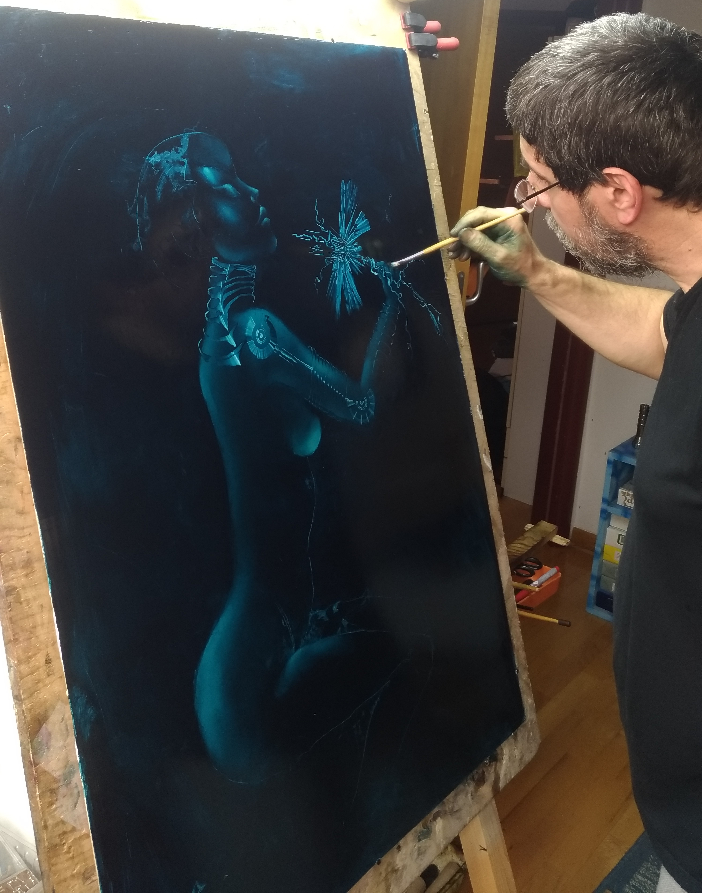

ABOUT

Sinisa Kadic was born in 1960. Educated formally in arts but also
spending his youthful years at ateliers of local artists at the
Petrovaradine fortress that overlooks his native town – Novi Sad. But
the greatest impact made his muse Olja Ivanjicki, famous fantastic
artist from Belgrade. Since 1980.-ies exhibits his paintings all
around ex-Yugoslavia and in few occasions in Europe and America, both
in galleries and online. Now let’s recollect the last year. Two
collective exhibitions, in May and October in Belgrade. A solo
exhibition at the same “Green Door” gallery in June. All three
exhibitions were juried by professors from the Art Academy at
Belgrade. Recognition for artistic achievement and certificate from
Luxemburg Art Prize in the past three years and one of the winners of
the third Boomer Art Prize competition. This year – collective
exhibition in March.
